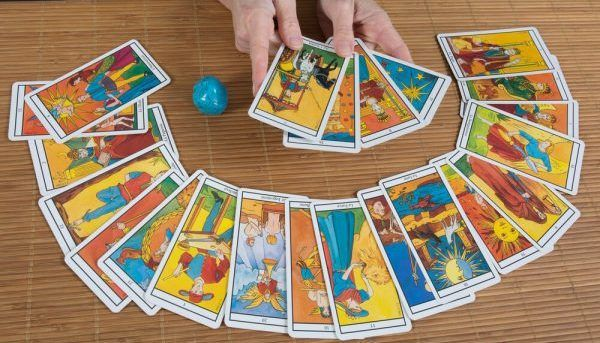
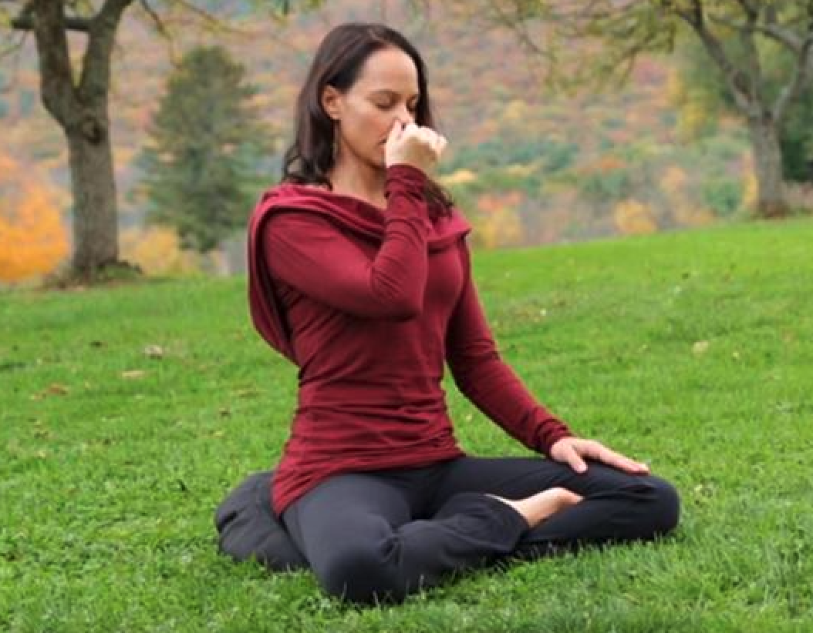

<!DOCTYPE html>
<html lang="pt-br>
	<head>
		<meta charset="utf-8" />
		<title>Lotus Cosmica</title>
		<meta name="author" content="Camila Ribeiro" />
		<meta name="keywords" content="Tarot, Terapias Holisticas, Yoga, Yogaterapia, Reiki">
		<meta name="description" content="Atendimento on-line de Terapias Holísticas" />
	</head>
	<body link="800080" alink="800080" vlink="800080">
		</img>
		<center>
			<font face="Maven Pro" size="4">
				<a href="#"> HOME </a>
				<a href="#pag-beneficios"> BENEFÍCIOS </a>
				<a href="#pag-terapias"> TERAPIAS </a>
				<a href="#pag-atendimentos"> ATENDIMENTOS </a>
				<a href="agendamentos.html"> AGENDAMENTOS </a>	
			</font>	
		</center>
		<hr />
		<font face="Oswald" size="5" color="800080">
			<h1 align="center">Lótus Cósmica</h1>
		</font>
		<font face="Maven Pro" size"4" color="#757575">
		<p align="justify">
			A <b>Terapia Holística</b> consiste em um conjunto de técnicas variadas que são usadas de maneira complementar aos métodos tradicionais da medicina ocidental. Essas técnicas trabalham sobre a totalidade do ser humano e suas multidimensões, com intuito de restaurar e manter o <strong>equilíbrio</strong> entre o corpo, mente e espírito.
		<br /><br />
		</p>
		<p align="center">
			A Lótus Cósmica tem o objetivo de ser um canal de apoio on-line para a sua <u>autorrealização.</u>
		</p>
		<hr id="pag-beneficios" />
		<font face="Oswald" size="5" color="800080">
		<h2> Benefícios </h2>
		</font>
		<p> As Terapias Holísticas podem proporcionar: </p>
		<ul type="circle">
			<font size="4">
				<b>
					<li>Alívio do estresse;</li>
					<li>Sono saudável;</li>
					<li>Equilíbrio emocional;</li>
					<li>Aumento da autoestima;</li>
					<li>Vida mais plena e saúdavel;</li>
				</b>
			
		</ul>
		<hr id="pag-terapias" />
		<font face="Oswald" size="5" color="800080">
		<h2> Terapias </h2>
		</font>
		<p> Contamos com as seguintes Terapias Holísticas: </p>

		<table border="0">
			<tr align="center">
				<td></td>
				<td></td>
				<td></td>
				<td></td>
			</tr>
			<tr align="center">
				
				<td><font face="Oswald" size="5" color="#C2185B">Tarot</font></td>
				<td><font face="Oswald" size="5" color="#C2185B">Yoga</font></td>
				<td><font face="Oswald" size="5" color="#C2185B">Reiki</font></td>
				<td><font face="Oswald" size="5" color="#C2185B">Terapia Quântica</font></td>


			</tr>
			<tr align="center">
				<td>Conselhos para decisões importantes e projetos.</td>
				<td>Meditação, Asanas, Prayanamas, Mantras e Relaxamento.</td>
				<td>Alinhamento de Chakras com o Sistema de Cura Reiki</td>
				<td>Limpezas Multidimensionais</td>
			</tr>
		</table>
		
		<hr id="pag-atendimentos" />
		<font face="Oswald" size="5" color="800080">
		<h2> Atendimentos </h2>		
		</font>
		<table border="0">
			<tr>
				<td>
					<p>Os atendimentos duram no mínimo 1 hora, podendo se prolongar de acordo com a vontade do paciente, acontecem on-line via whatsapp ou google meet no período da tarde, entre 13h-17h.</p>

					<p>O Acompanhamento é feito por Camila Ribeiro, que após apresentar o seu trabalho, fazer uma anamnese do paciente, identificando  a(s) modalidade(s) para cada caso. 
					O acompanhamento é mediante o que a terapeuta considerar necessário, para a independência do paciente nas modalidades utilizadas.</p>
					<p> Também contamos com um canal no youtube com conteúdos exclusivos sobre as terapias holísticas.
					<p align="center">
					<a href="http://www.instagram.com/lotus.cosmica" target=_blank">
					
					</a>
					@lotus.cosmica
					<a href="https://www.youtube.com/user/happyberryca" target=_blank">
					
					</a>
					Lótus Cósmica
					<p>
				</td>
				<td>
					<video src="img/yogasutra.mp4" width="500" controls autoplay preload="auto" loop>
						Seu navegador não suporta vídeo!
					</video>
					
				</td>
			</tr>	
		</table>
		<hr />
		<p align="center"> Desenvolvido por <a href="http://www.instagram.com/c4milaribeir0/" target=_blank">Camila Ribeiro</a> 2021. </p>
	</body>
</html>